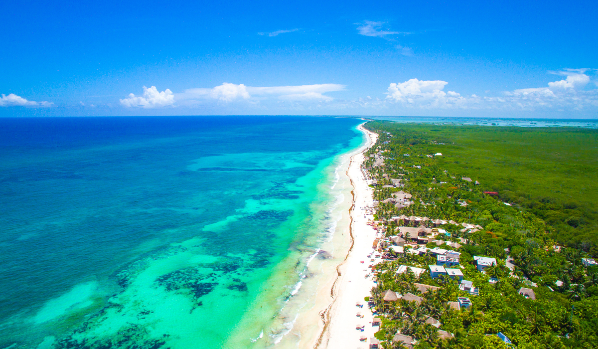

Travel
Below are my top 3 Travel Destinations.

Switzerland

Bolivia

Thank you for visiting my webpage.
This is just a small insight into what i like to work on in my spare time.
Here are some things I like to do in my spare time.
One of my main passions is gaming. Having played since I was younger, I still remember my first console and from then on. I was hooked.
I compete in E-Sports with my college club, give tutorials to new players and use gaming as an effective way to unwind after working on college projects.
I love to draw in my spare time, and it was this love that ultimately made me pursue my course in Interactive Digital Art and Design.
I love the attention to detail, and the the creativity that comes from this work.
I love to learn new skills and this is where my love for programming and web development stems from.
I love to learn new ways of solving issues with websites, using out of the box ideas to design, and complete projects.
Below are my top 3 Travel Destinations.
If I had not pursude my current course in Interactive Digital Art and Design I would have persude my love for photography instead.
This is a moment I will treasure forever.
I took this while I was walking home from my last day of 1st year in college And it was at this exact moment I realised I had made the right decision.
I Captured this image while cycling in carlow.
No filters , No editing , Just my hometown in all it's natural beauty.
Time is fleeting. This photo is to remind me while we cant stop time, we can treasure it forever. Those leaves have fallen , New leaves have grown, That is why this picture will always be shown.
I am currently looking for my next opportunity.
I worked for this company who were sub-contracted to design and paint other large chain organisations.
I got to develop my timekeeping skills and attention to detail.
I like to imagine that my graphic design skills were developed during my time here.
I am currently a full time student about to finish my 2nd year in Interactive Digital Art and Design.
From projects to assignments to exams and more.
This is where i am currently developing and learning new skills. As of April 26th i am available to work full time and would love a chance to further expand my skillset.